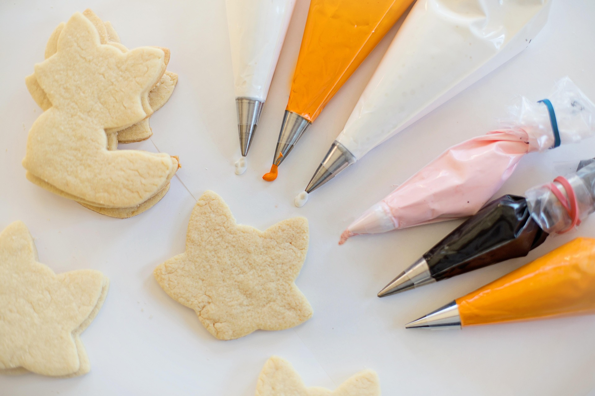
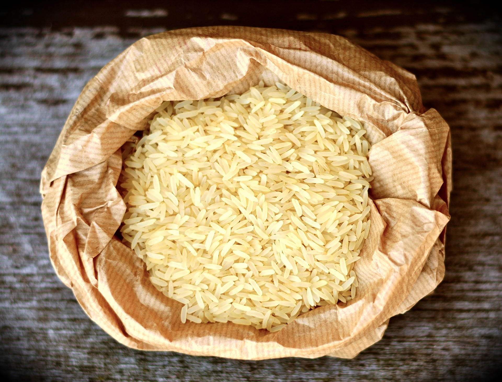
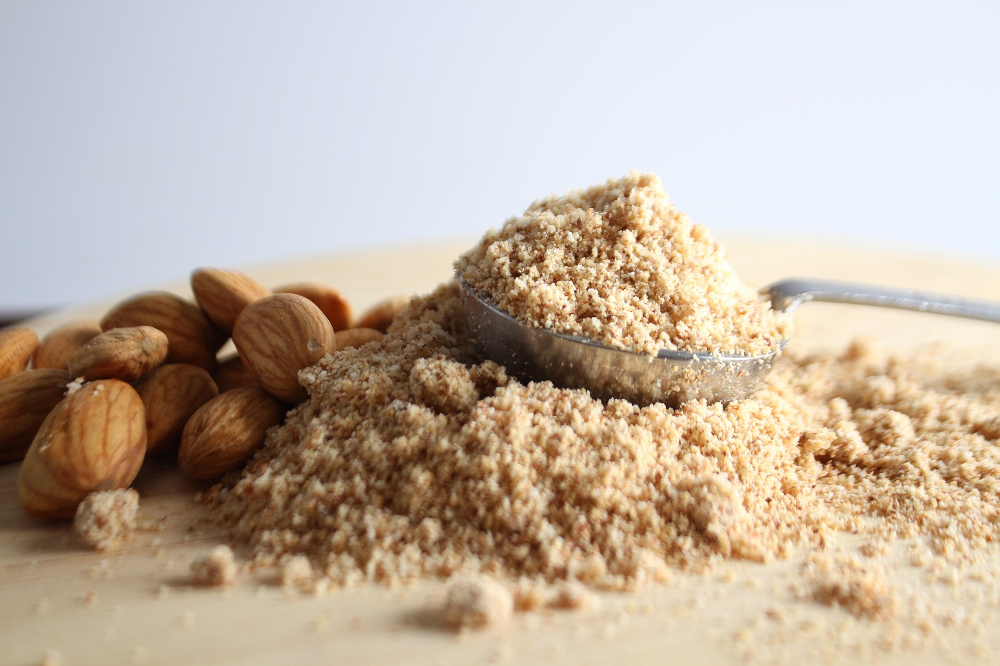
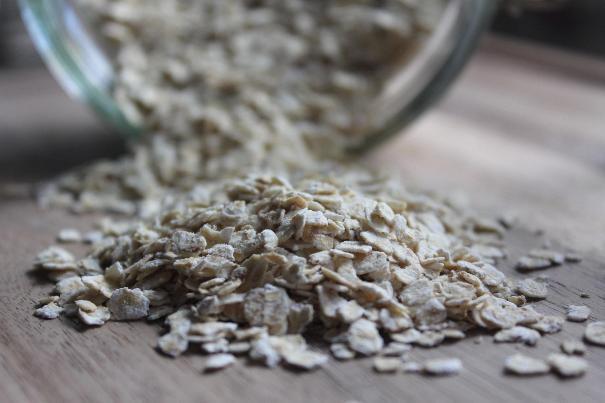

Enjoy Baked Goods Gluten Free
Welcome to Gluten Free Baking Made Easy! Here you’ll find simple, delicious, and approachable gluten free recipes for all occasions and for all skills levels.

There are plenty of gluten free flours to choose from, but they all have small differences. The three main gluten free flours are Rice, Almond and Oat. Rice, almond, and oat flour behave quite differently in gluten-free baking because of their protein, fat, and starch content. Rice flour is high in starch with a neutral flavor, giving structure but sometimes a dry or texture. Almond flour is made from ground almonds and is high in fat, which makes baked goods moist and rich, but can lack structure. Oat flour is softer and slightly sweet and it absorbs more liquid, creating a softer texture. Because none of these flours alone can fully replace gluten’s elasticity and structure, they often work best when combined.



Gluten-Free Flour Conversion Guide
| Regular Flour | Rice Flour | Almond Flour | Oat Flour |
|---|---|---|---|
| 1 cup | 7/8 cup | 1 ¼ cups | 1 cup |
| 2 cups | 1 ¾ cups | 2 ½ cups | 2 cups |
| 3 cups | 2 ⅝ cups | 3 ¾ cups | 3 cups |
Learn more about gluten free baking at King Arthur Baking